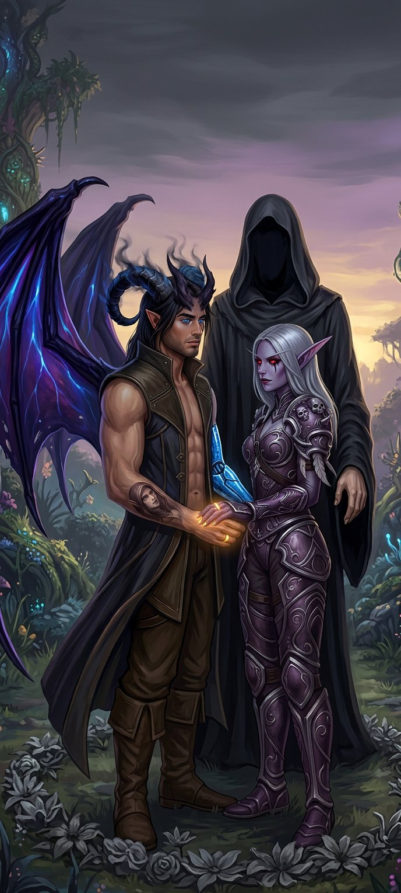

Capítulo Quarenta e Um
A porta se abre
O céu mudou primeiro.
Não foi sutil. Não foi aquele tipo de mudança que só se percebe quando se está prestando atenção — o tipo que se confunde com nuvens, com vento, com a rotação natural da luz ao longo do dia. Não. Essa mudança foi absoluta. O céu — aquele céu impossível do refúgio de Mira, com suas tonalidades entre lilás e dourado, com suas estrelas que apareciam mesmo durante o dia como se não soubessem que deviam esperar a noite — esse céu ficou cinza.
Não cinza de tempestade. Não cinza de nuvem.
Cinza de ausência. Como se alguém tivesse puxado um pano sobre a realidade, cobrindo tudo com uma camada de nada. Sem cor. Sem profundidade. Sem vida.
E o ar ficou pesado.
Varokh foi o primeiro a se mover. Sempre era. O corpo dele reagia antes do pensamento — séculos de batalha tinham gravado nos ossos dele um instinto que era mais rápido que qualquer decisão consciente. Ele largou o machado na varanda, levantou-se, e olhou para o horizonte.
— Ele chegou — disse.
Duas palavras. Sem drama. Sem urgência desnecessária. Do jeito que Varokh dizia tudo que importava — direto, limpo, sem espaço para interpretação equivocada.
Elyra estava ao lado dele antes que a frase terminasse. As facas já nas mãos — não as de arremesso, as de combate próximo, aquelas que ela guardava nas botas e que apareciam como se fizessem parte do corpo dela, como se nascessem ali, entre os dedos e a lâmina.
— Onde?
— Em toda parte.
✦
Nathan sentiu antes de ver.
Sentiu no peito — uma pressão, como se algo estivesse empurrando de dentro para fora, como se o ar dentro dos pulmões tivesse ficado denso demais, pesado demais, errado demais. Sentiu no braço esquerdo — a prótese vibrou, um zumbido baixo, metálico, que ele nunca tinha sentido antes, como se o metal estivesse reagindo a algo que a carne não conseguia perceber. Sentiu nos chifres — aquela extensão de sombra que crescia da testa dele pulsou, dolorida, como se estivesse sendo puxada por uma força invisível.
E sentiu nos anéis.
Os anéis — que brilhavam dourado havia semanas, no ritmo sincronizado dos dois corações — tremeram. Não pulsaram. Tremeram. Do jeito que treme um animal quando pressente o predador. Do jeito que treme o chão antes do terremoto.
— Sylvanas — disse ele.
Ela já estava de pé. O arco na mão. A aljava nas costas. Os olhos vermelhos — aqueles olhos que tinham aprendido a ser suaves para ele, que tinham aprendido a ser ternos, que tinham aprendido a existir sem a necessidade constante de vigiar — esses olhos voltaram ao que eram antes. Dois pontos de luz fria. Dois faróis na escuridão.
— Eu sei — disse ela. — Eu sinto.
✦
A porta não se abriu.
Não houve porta. Não houve fenda, nem rasgo, nem o som característico de realidade se partindo — aquele som que Nathan conhecia bem, que ele tinha ouvido no dia em que caiu na Gorja, no dia em que tudo começou. Não. O Colecionador não usava portas. O Colecionador era a porta. Ou melhor: o Colecionador era o espaço entre as portas, o vazio que conectava todos os mundos, o silêncio entre as notas de uma sinfonia que ninguém conseguia ouvir por inteiro.
Ele simplesmente apareceu.
No centro do jardim. Entre as flores que Mira cultivava — aquelas flores impossíveis, que desabrochavam em cores que não existiam em nenhum mundo conhecido, que cheiravam a memórias e a promessas — ele apareceu. E o jardim morreu.
Não imediatamente. Não de uma vez. Mas as flores mais próximas dele — um círculo perfeito de três metros de raio — murcharam. As pétalas caíram. As cores se apagaram. Os caules dobraram. E o chão — aquele chão que Mira tinha nutrido com cuidado, com paciência, com amor — ficou seco. Cinzento. Morto.
O Colecionador não destruiu. O Colecionador retirava. Retirava a vida. Retirava a cor. Retirava o sentido. Retirava tudo que fazia uma coisa ser mais do que matéria, e deixava apenas a matéria — vazia, oca, desprovida de qualquer coisa que pudesse ser chamada de essência.
Era assim que ele colecionava.
✦
Ele não tinha forma definida.
Nathan já sabia disso — já tinha visto o Colecionador antes, nos momentos em que a realidade se afinava e permitia vislumbres do que existia entre os mundos. Mas ver de relance é uma coisa. Ter a coisa parada no jardim de Mira, a vinte metros de distância, ocupando espaço e distorcendo a luz ao redor — isso era outra coisa completamente diferente.
O Colecionador parecia humano. Mais ou menos. Da mesma forma que uma sombra parece ter a forma do objeto que a projeta — vagamente, aproximadamente, mas nunca com precisão suficiente para ser confundido com o original. Ele tinha a altura de um homem. Tinha dois braços, duas pernas, uma cabeça. Mas os contornos eram imprecisos — como se a realidade não conseguisse decidir exatamente onde ele terminava e o vazio começava, como se o universo tivesse dificuldade em renderizar algo que não deveria existir dentro dele.
E os olhos.
Os olhos do Colecionador eram brancos. Não brancos de luz. Brancos de ausência. Brancos do jeito que o silêncio é branco — não porque contém algo, mas porque contém tudo e nada ao mesmo tempo. Olhar para aqueles olhos era como olhar para o fundo de um poço que não tem fim — você sabe que tem algo lá embaixo, mas não consegue ver, e a impossibilidade de ver é pior do que qualquer coisa que pudesse estar lá.
— Nathan.
A voz do Colecionador não veio de lugar nenhum. Não saiu da boca dele — se é que ele tinha boca, se é que aquela forma vagamente humana tinha qualquer das estruturas que fariam uma voz possível. A voz simplesmente existiu, como se o som tivesse sido colocado dentro do ar, como se a realidade tivesse sido obrigada a acomodá-la.
Era uma voz sem sotaque. Sem gênero. Sem idade. Uma voz que poderia ser de qualquer pessoa e que não era de ninguém.
— Chegou a hora.
✦
Varokh se colocou entre o Colecionador e a casa.
Não foi um gesto planejado. Não foi uma decisão tática, calculada, pensada. Foi instinto puro — aquele instinto que existia nele antes da razão, antes da civilização, antes de qualquer coisa que o tivesse ensinado a ser mais do que músculo e osso e fúria. Varokh se colocou entre o perigo e os seus. Sempre foi assim. Sempre seria.
O machado — aquele machado que ele afiava todas as manhãs, que ele limpava todas as noites, que ele conhecia melhor do que conhecia as próprias mãos — pesava na mão dele. Não de peso físico. De intenção. Do tipo de peso que uma arma adquire quando sabe que vai ser usada para algo que importa.
— Você não vai levar ele — disse Varokh.
O Colecionador inclinou a cabeça. Um gesto vagamente humano. Vagamente curioso. Como se Varokh fosse um inseto interessante — não ameaçador, não relevante, apenas... curioso. Curioso da mesma forma que uma criança é curiosa sobre uma formiga antes de esmagá-la.
— Você não pode me impedir.
Não foi uma ameaça. Não foi dita com raiva, com desprezo, com qualquer emoção que pudesse ser reconhecida como hostil. Foi dita como um fato. Do jeito que se diz "a água é molhada" ou "o sol nasce no leste". Do jeito que se diz algo que é tão verdadeiro que nem merece contestação.
Varokh grunhiu.
Elyra se colocou ao lado dele. Sem dizer nada. Sem precisar dizer nada. Os dois, lado a lado, contra algo que nenhum dos dois entendia completamente — mas que os dois enfrentariam mesmo assim. Porque era isso que eles faziam. Porque era isso que eles eram.
✦
Nathan saiu da casa.
Sylvanas saiu com ele. Não atrás — ao lado. Sempre ao lado. Do jeito que eles faziam tudo desde que os anéis tinham se formado, desde que a conexão entre eles tinha se tornado algo mais profundo do que palavras, mais antigo do que tempo, mais real do que realidade.
A mão dele na dela. A prótese metálica contra os dedos frios. Os anéis pulsando — trêmulos, irregulares, mas ainda pulsando. Ainda conectados. Ainda dizendo, em linguagem de luz, o que os dois não precisavam dizer em linguagem de palavras.
Estou aqui.
Eu sei.
Passe o que passar.
Eu sei.
O Colecionador olhou para Nathan. E Nathan olhou para o Colecionador. E entre os dois — entre aquele homem com chifres de sombra e asas dobradas e braço de metal e olhos que tinham sido castanhos e agora eram azuis, e aquela coisa sem forma definida e olhos brancos de ausência — havia um fio. Invisível. Antigo. Mais velho do que qualquer um dos dois.
— Você abriu a porta — disse o Colecionador. — E portas abertas precisam ser fechadas. Ou atravessadas.
— E se eu não quiser atravessar?
— Então a porta vai te puxar.
Nathan sentiu. Na prótese. Nos chifres. Nos anéis. Uma pressão — suave, quase delicada, mas constante. Como se algo estivesse tentando arrastar ele para algum lugar. Para algum lugar que não era aqui. Para a Terra. Para o mundo que ele tinha deixado para trás. Para a vida que ele tinha perdido — ou abandonado, dependendo do ângulo.
— Você colocou algo dentro de mim — disse Nathan.
Não foi pergunta. Foi constatação.
O Colecionador não negou.
— Eu coloquei. A habilidade. O aprendizado acelerado. A resistência. Os reflexos. Tudo isso fui eu. Tudo isso eu te dei.
— E agora você quer cobrar.
— Não é cobrar. É usar. O que eu coloquei dentro de você foi feito para abrir portas. Para conectar mundos. Para colecionar. E você — você é bom nisso, Nathan. Melhor do que eu esperava. Melhor do que qualquer um que eu já tentei antes.
Sylvanas apertou a mão dele.
Forte.
— Ele não vai com você — disse ela.
✦
O Colecionador virou aqueles olhos brancos para Sylvanas.
E algo aconteceu.
Algo que Nathan nunca tinha visto antes — nunca, em nenhum momento, em nenhuma das interações que ele tinha testemunhado entre o Colecionador e qualquer outra pessoa, qualquer outra entidade, qualquer outra coisa que existisse nos mundos que ele conhecia.
O Colecionador hesitou.
Não muito. Não por muito tempo. Apenas um instante — uma fração de segundo, talvez menos, talvez o espaço entre dois batimentos cardíacos. Mas ele hesitou. Do jeito que se hesita quando se encontra algo que não se esperava encontrar. Do jeito que se hesita quando a realidade apresenta uma variável que não estava nos cálculos.
— Você — disse o Colecionador.
E a voz dele — aquela voz sem sotaque, sem gênero, sem idade — mudou. Minimamente. Quase imperceptivelmente. Mas mudou. Ganhou algo. Algo que Nathan levaria um tempo para entender o que era.
Intriga.
— Você é real.
Sylvanas não respondeu. Porque não precisava responder. Porque a resposta era óbvia — sim, eu sou real — e porque Sylvanas Windrunner não desperdiçava palavras com o óbvio.
— Ele te conhece como ficção — continuou o Colecionador. — Como construção. Como invenção de um mundo que não é o dele. E no entanto... — Pausa. — No entanto você está aqui. E os anéis... — Os olhos brancos desceram para as mãos entrelaçadas. — Os anéis são reais.
— São.
— Como?
Sylvanas inclinou a cabeça. Um gesto pequeno. Quase divertido — se é que Sylvanas Windrunner poderia ser descrita como divertida em algum momento, e Nathan sabia que podia, nos momentos certos, com as pessoas certas.
— Você realmente não entende — disse ela.
Não foi provocação. Não foi arrogância. Foi constatação. Do tipo que se faz quando se descobre que o adversário tem uma fraqueza que ele não sabe que tem.
— Não — disse o Colecionador. — Eu não entendo.
— Então eu vou te explicar.
✦
Sylvanas deu um passo à frente.
Nathan tentou segurá-la — a mão dele apertou a dela, um gesto que dizia "não, espera, cuidado" — mas ela apertou de volta e soltou. Suave. Firme. Do jeito que se solta quando se precisa ir mas não se quer machucar ao sair.
Ela parou a cinco metros do Colecionador.
Cinco metros. A distância exata que ela tinha calculado — Nathan sabia, porque Sylvanas calculava tudo, porque distância era o que ela fazia melhor, porque manter o inimigo a cinco metros era manter o inimigo no alcance do arco mas fora do alcance das mãos.
— Você coleciona — disse ela. — Mundos. Almas. Conexões. Histórias. Você guarda tudo. Cataloga tudo. Preserva tudo.
— Sim.
— Mas você nunca viveu nada.
Silêncio.
Um silêncio diferente dos outros — não vazio, não pesado, mas cheio. Cheio de algo que o Colecionador não esperava sentir. Cheio de algo que ele talvez nunca tivesse sentido antes.
— Você sabe o que as coisas são — continuou Sylvanas — mas não sabe o que as coisas significam. Você sabe que os anéis existem. Você vê a luz. Você mede a frequência. Você cataloga o fenômeno. Mas você não sabe o que eles são.
— Eles são uma conexão entre dois seres vivos. Um vínculo. Uma—
— Não. — A voz de Sylvanas cortou como flecha. — Eles são a prova de que duas pessoas que não deveriam existir no mesmo universo — que não deveriam nem saber da existência uma da outra — se encontraram. E se reconheceram. E escolheram ficar.
Ela deu mais um passo.
Quatro metros.
— Você abriu uma porta e puxou o Nathan para cá. Você colocou habilidades dentro dele. Você o transformou — os chifres, a prótese, os olhos, as asas — tudo isso foi você. Tudo isso foi o que você fez com ele.
— Sim.
— Mas você não fez o que importa.
— O que importa?
Sylvanas sorriu.
Não muito. Não largamente. Apenas aquele sorriso — aquele que Nathan conhecia melhor do que conhecia o próprio reflexo, aquele que aparecia raramente e que por isso valia mais do que qualquer tesouro em qualquer mundo — aquele sorriso que dizia "eu sei algo que você não sabe e eu não tenho pressa nenhuma em te contar".
— Você não fez ele me escolher — disse ela. — Isso ele fez sozinho. E é por isso que você não pode levá-lo. Porque o que o segura aqui não é força. Não é vínculo mágico. Não é porta. Não é nada que você possa abrir ou fechar ou atravessar.
Ela olhou para Nathan. E Nathan olhou para ela. E naquele olhar — curto, rápido, mas carregado de tudo — tinha uma conversa inteira.
Eu escolhi você.
Eu sei.
Antes de saber que você era real.
Eu sei.
E depois de saber que você era real.
Eu sei.
E eu escolheria de novo. Em qualquer mundo. Em qualquer universo. Em qualquer versão da realidade.
Sylvanas virou de volta para o Colecionador.
— O que o segura aqui é escolha. E escolha não se coleciona. Escolha se respeita. Ou se perde.
✦
O Colecionador ficou em silêncio.
Um silêncio longo. Mais longo do que qualquer silêncio que Nathan já tivesse presenciado dele. E nesse silêncio, algo mudou — não no Colecionador, exatamente, mas no ar. Na pressão. Na forma como a realidade se comportava ao redor dele.
As flores mortas não voltaram. O jardim não se recuperou. O céu continuou cinza. Mas a pressão — aquela pressão que Nathan sentia no peito, nos chifres, na prótese, nos anéis — diminuiu. Minimamente. Como se o Colecionador tivesse relaxado, de algum jeito que só entidades como ele podiam relaxar.
— Escolha — repetiu ele. Como se a palavra fosse nova. Como se ele estivesse experimentando o gosto dela pela primeira vez.
— Sim — disse Nathan.
E deu um passo à frente. Para ao lado de Sylvanas. Sempre ao lado. Nunca atrás, nunca na frente — ao lado. Do jeito que eles faziam tudo.
— Eu escolho ficar.
Quatro palavras. Simples. Diretas. Sem drama. Sem declaração épica. Sem discurso. Apenas a verdade — crua, limpa, incontestável.
Eu escolho ficar.
E os anéis brilharam. Forte. Dourado. Do jeito que brilhavam quando algo era decidido — não com palavras, não com promessas, mas com a convicção absoluta de quem sabe exatamente o que quer e não vai mudar de ideia.
O Colecionador olhou para os anéis. Olhou para Nathan. Olhou para Sylvanas. Olhou para Varokh e Elyra, que continuavam na varanda — firmes, imóveis, prontos. Olhou para a casa de Mira, que estava em silêncio mas não estava vazia.
E então — devagar, como se cada movimento exigisse um cálculo interno que ele não estava acostumado a fazer — ele recuou.
Um passo.
Dois.
Três.
E quando ele estava a dez metros, ele parou.
— Eu vou voltar — disse.
Não foi ameaça. Foi promessa. Do tipo que se faz quando se reconhece que algo não terminou — não porque se quer forçar, mas porque se entende que a história ainda tem páginas que precisam ser escritas.
— Eu sei — disse Nathan.
— E quando eu voltar, eu vou trazer uma proposta. Não uma ordem. Não uma ameaça. Uma proposta. Algo que você possa considerar. Algo que faça sentido.
— Eu vou ouvir.
— Mas a escolha continua sendo sua?
Nathan olhou para Sylvanas. E sorriu. Aquele sorriso — aquele que Sylvanas tinha ensinado a ele sem saber, aquele sorriso que era pequeno mas verdadeiro, que era simples mas profundo, que dizia tudo sem dizer nada.
— Sempre — disse ele.
E o Colecionador se foi.
Sem porta. Sem rasgo. Sem som. Apenas... deixou de estar ali. Do jeito que uma sombra deixa de existir quando a luz se apaga — não porque foi embora, mas porque as condições para a existência dela deixaram de ser satisfeitas.
E o céu voltou. Devagar. Lilás e dourado. Estrelas durante o dia. Impossível e belo.
E o jardim — o círculo de três metros de flores mortas — continuou morto. Porque algumas coisas não se recuperam. Porque a passagem do Colecionador deixava marcas que nem mesmo Mira, com todo o seu cuidado e todo o seu amor, conseguia desfazer.
Mas o resto — o resto do jardim, o resto da casa, o resto do mundo — continuou.
E Nathan e Sylvanas continuaram.
Mãos dadas.
Anéis brilhando.
Juntos.
